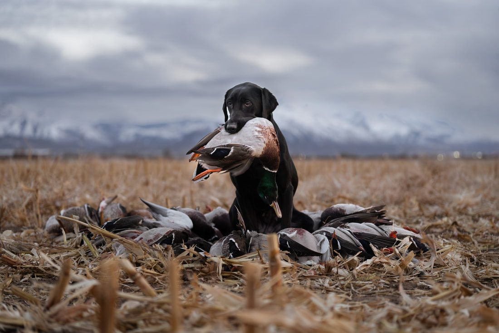
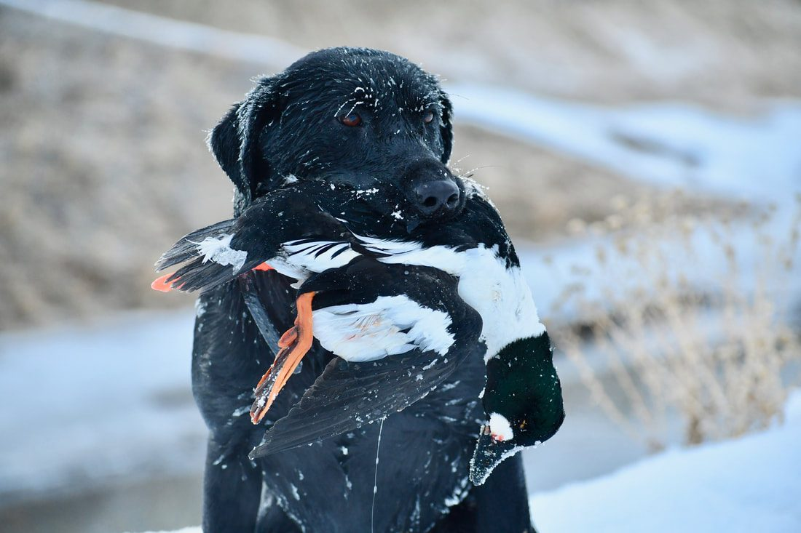
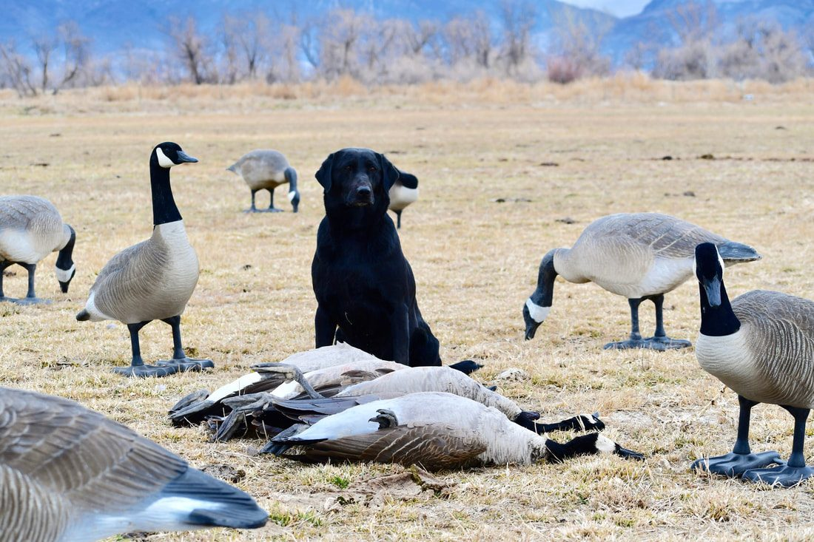
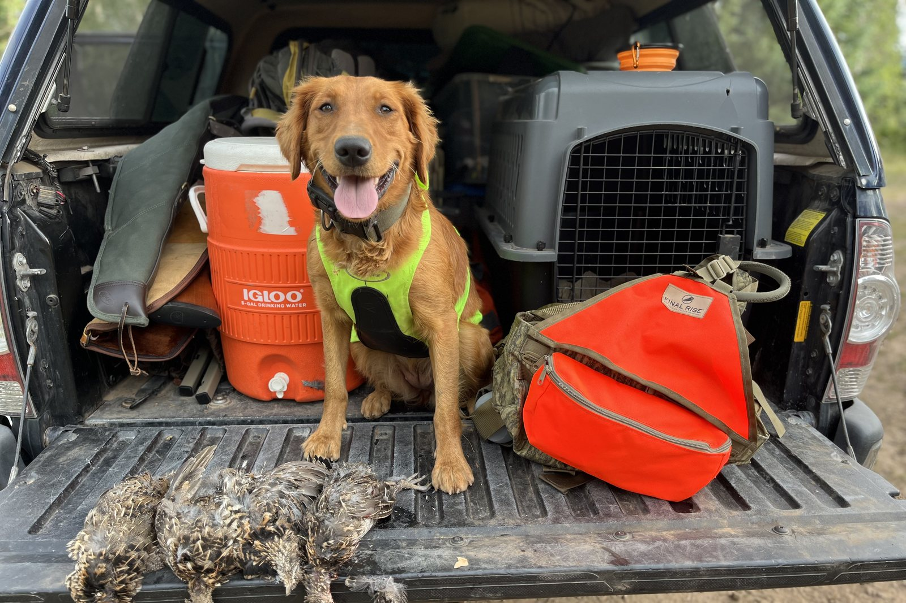

If your dog is scared of gunshots, the first thing I would do is stop shooting around the dog for now.
Do not keep exposing the dog to more gunfire just to see whether the problem is still there.
Do not take the dog hunting and hope it works through it.
Do not take the dog to a shooting range.
And do not try to force the dog to “get used to it.”
If the dog has already connected gunfire with fear, more uncontrolled gunfire can make that association stronger.
The next step is to slow everything down and figure out exactly what the dog is telling you. A gun-shy dog can make progress, but this page is about what to do in the next day or two — not the full training plan.
First, think about what happened
When someone calls me and says, “My dog is scared of gunshots,” one of the first things I ask is: What happened?
I want to understand the experience that caused the owner to become concerned.
Maybe someone:
- Shot directly over the dog.
- Took a young dog hunting before it was ready.
- Brought the dog to a shooting range.
- Fired a gun close to the dog to test its reaction.
- Exposed the dog to fireworks or another sudden loud noise.
- Started with too much noise too quickly.
That history matters. It helps us understand whether the dog had one bad experience or whether it has been repeatedly exposed to gunfire that made it uncomfortable.
A scared dog does not always run away
One of the biggest misunderstandings about gun shyness is that the dog has to bolt, hide, or run back to the truck.
That is only one possible reaction.
Some dogs stay right next to the owner. That does not necessarily mean they are comfortable.
What I watch for is a change in the dog’s normal demeanor.
A dog may be uncomfortable with gunfire if it:
- Stops hunting.
- Stops ranging away from the owner.
- Walks behind or beside the handler instead of working.
- Stops retrieving.
- Loses interest in birds.
- Becomes unusually quiet.
- Freezes or becomes tense.
- Tries to return to the truck.
- Starts paying more attention to the gun than the activity it was enjoying.
A dog can stay beside you and still be scared.
The goal is not simply a dog that does not run away. The goal is a dog that can hear gunfire and continue acting like itself. Those subtle behavior changes are what I look for — I cover them in Signs Your Dog Is Becoming Gun Shy.
Do not keep “testing” the dog
This is where a lot of owners accidentally make the problem worse.
They may think:
“Let’s shoot again and see if he’s still scared.”
Or:
“Maybe if he hears enough shots, he’ll eventually get over it.”
That approach can backfire.
If the dog is already uncomfortable, every additional bad exposure can reinforce the negative association.
I would rather stop the gunfire and begin rebuilding confidence than keep checking the dog with another shot.

Start with something positive
When we work with a dog that has developed a gun issue, I like to start with something the dog enjoys.
For hunting dogs, that is often:
- Birds.
- Retrieving.
- Chasing.
- Food.
- Play.
- Movement.
If the dog has strong bird drive or retrieving drive, that gives us something positive to build around.
For example, with a bird dog we may use a pigeon and get the dog excited about the bird before any gunfire is added. With a retriever, we may focus on retrieving something the dog really enjoys.
At first, there may be no gunfire at all.
The goal is to get the dog happy, active, and engaged again. For the step-by-step field work, see how to fix a gun-shy dog.
Why movement can help
I like having the dog moving when possible.
A dog that is chasing, retrieving, hunting, or actively working has something positive to focus on.
Movement can also help the dog work through stress. That is one reason I would rather build gunfire into an activity the dog loves than have the dog sitting still and waiting for a loud noise to happen.

Reintroduce gunfire at a very low level
Once the dog is strongly engaged in something positive, live gunfire can eventually be introduced again.
But we do not start close.
We put the shooter far enough away that the sound is barely noticeable to the dog. The gun is pointed away from the dog. Then we watch the dog’s reaction.
If we are working with birds, we may throw the bird and fire the shot near the top of the bird’s arc. The dog should remain focused on the bird.
If the dog keeps retrieving, chasing, hunting, or working with the same energy, that is a good sign. If the dog’s behavior changes, we are too close or moving too fast.
- 1Positive activity
- 2Distant gunfire
- 3Watch demeanor
- 4Move closer only if the dog stays happy

Let the dog tell you when to progress
There is no fixed timeline for this.
You should not decide: “I’ve done this for three days, so now the gun needs to be closer.” The dog determines the pace.
If the dog’s demeanor stays happy and normal, you may be able to progress gradually.
If the dog:
- Stops retrieving.
- Stops chasing.
- Becomes clingy.
- Starts watching the shooter.
- Loses interest in the bird.
- Shuts down.
- Stops ranging out.
then back up.
The dog is telling you that the gunfire has become too important.
What if the dog is already very afraid?
Some dogs have such a strong negative association with gunfire that even distant live gunfire is difficult.
Other dogs do well until the shooter reaches a certain distance, then they hit a wall.
I’ve worked with dogs that were comfortable with gunfire farther away, but when the gun reached roughly 30 or 40 yards, their demeanor started changing.
At that point, continuing to move closer is usually not the answer. That is one of the situations where I may use Gunshy Fix.
Using Gunshy Fix at home
Gunshy Fix was created to give owners a more controlled way to work around the sound of gunfire.
The program begins with calming music and progressively introduces gunfire through the lessons.
For a dog that is already scared, I recommend starting with the first lesson at an average, comfortable volume. Then watch the dog.
The dog should be able to:
- Eat normally.
- Play.
- Retrieve.
- Relax around the house.
- Interact with the family.
- Move around normally.
- Maintain the same overall personality and energy.
Stay on that lesson until the dog is fully comfortable. Then move to the next lesson.
If the dog gets nervous, go back
If the dog’s demeanor changes when you move to a new lesson, go back to the previous one.
Do not try to push through it.
Stay at the level where the dog is comfortable until the dog is completely relaxed again. Then try moving forward.
This is the same rule we use in the field:
If the dog’s behavior changes, back up.
What not to do with a dog that is scared of gunshots
If your dog has already shown fear around gunfire, I would avoid:
- Shooting over the dog again.
- Taking the dog to the range.
- Tying the dog somewhere while people shoot.
- Playing loud gunshot recordings suddenly.
- Increasing the volume quickly.
- Taking the dog hunting before it is ready.
- Assuming the dog is fine just because it stays beside you.
- Rushing because hunting season is coming.
The goal is not exposure for the sake of exposure.
The goal is controlled, positive exposure at a level the dog can handle.
How long can this take?
There is no one answer.
Dogs with decent prey drive or retrieving drive and consistent training can sometimes make very good progress in about a month.
Other dogs can take several months.
Dogs with severe gun issues or low drive are often harder.
The important thing is not the number of days. It is whether the dog’s confidence and normal behavior are improving. I cover that more fully in How Long Does It Take to Fix a Gun-Shy Dog?
What if I caused the problem?
I hear this from owners all the time.
They got excited. They wanted to hunt with their dog. They shot too close or moved too fast. Then the dog changed.
At that point, I do not spend much time blaming the owner. I explain the options we have and what we can do next.
I also do not guarantee that every dog will be completely fixed.
What I can say is that if the owner is patient and the dog has some decent retrieving or bird drive, we often have something positive we can build from.
The process may take time. But the next step is not to keep repeating the mistake. It is to begin rebuilding the dog’s confidence.
When should you use a professional trainer?
A lot of owners can start desensitization work at home. But transitioning back to live gunfire can require:
- Birds.
- Training property.
- A safe place to shoot.
- Another person handling the gun.
- Someone working with the dog.
- Enough experience to recognize subtle changes in behavior.
If you do not have that setup, getting help from a professional trainer may be the safest way to finish the process. That is covered in When a Gun-Shy Dog Needs Professional Training.
For a dog with severe gun issues, I often recommend getting the dog comfortable with the Gunshy Fix lessons first, then using professional field work to transition back to birds and live gunfire.
Can a dog scared of gunshots hunt again?
Sometimes, yes.
I have worked with dogs that had good hunting ability but stopped working when gunfire was introduced.
With patience, positive work, and gradual exposure, some of those dogs can get back to a point where gunfire is no longer shutting them down.
But I do not promise that outcome for every dog.
Each dog is different.
The earlier you stop adding negative gunfire experiences and begin working at the dog’s pace, the better position you are in to help.
The most important thing to do right now
If your dog is scared of gunshots:
Stop testing the dog with more gunfire.
Then start watching the dog’s demeanor. Find something positive the dog enjoys. Work at a level where the dog can remain happy and comfortable. And progress only when the dog’s behavior tells you it is ready.
That is where I would start.
Start rebuilding the association at home
Gunshy Fix was created to help owners begin that process in a controlled home environment.
The lessons combine calming music with gradually introduced gunfire so the dog can progress based on its comfort level instead of being thrown directly back into live shooting.